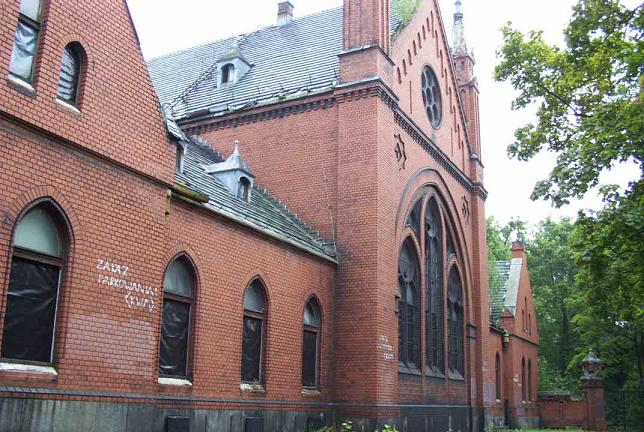
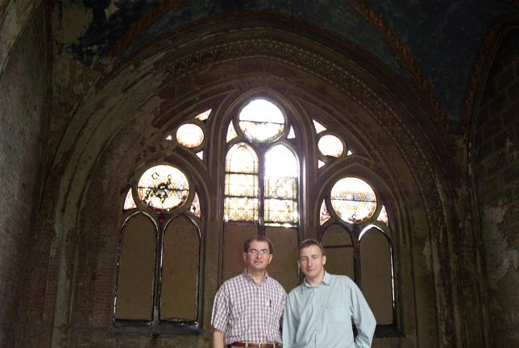
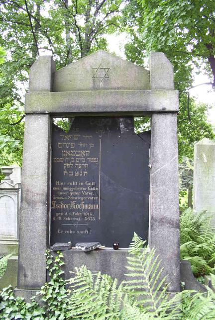
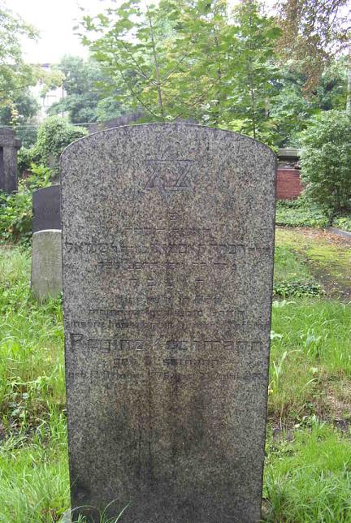
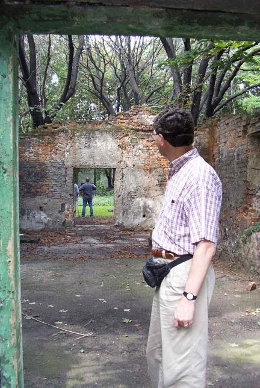
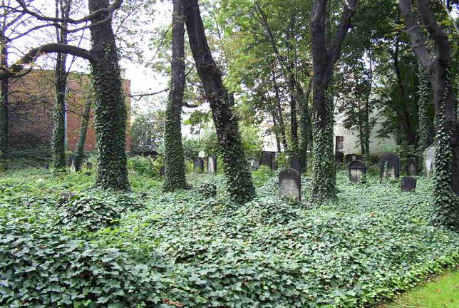

The first picture shows the now abandoned and decaying burial hall and administrative offices that serviced the “modern” Jewish cemetery of Gleiwitz, one of the few in Poland that was not razed by the Nazis. The Forum for Dialogue is currently raising funds to restore this handsome Gothic Revival building, dating to 1902, and thus welcomes your financial support.

The second picture shows the inside of the burial hall.

The third and fourth pictures show two of the tombstones in the “modern” cemetery, and they belong to two Kochmanns: Isidor, who died in 1915 and is listed in the 1914 edition of the Gleiwitz telephone book, and a Regina Kochmann – but neither of them appears in our family tree.


The fifth and sixth pictures are of the “old” Jewish cemetery, which is in a locked-up plot right in the middle of the city. As can be seen, only some walls are visible from the building that stood at its entrance, and the cemetery is overgrown with grass and plants. Most of the tombstones are toppled and they are unreadable, but surely many a 19th century Kochmann is buried there.


Back to the Gliwice Section
Back to the Homepage